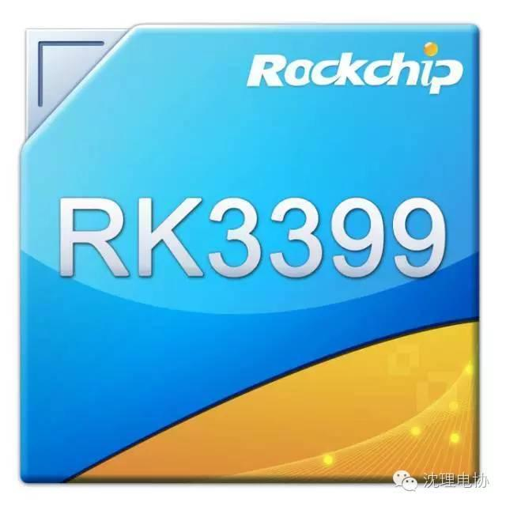
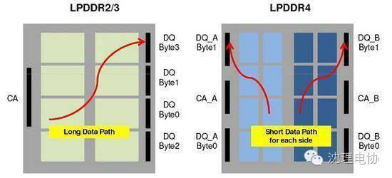

从瑞芯微RK3399来分析 什么让平板芯快到飞

瑞芯微RockchipRK3399处理器应用于2in1、安卓类商务平板、高性能平板终端产品具备六大产品优势：
6.兼容Android、Linux等操作系统。

分析人士称，RK3399处理器解决方案应用于商用平板、高端平板具有更快、功耗更低的特点。双USB3.0 Type-C、双ISP、PCI-e接口、支持LPDDR4内存等诸多新特性，均领先于目前平板电脑主流产品。


信息部/吴心成

瑞芯微RockchipRK3399处理器应用于2in1、安卓类商务平板、高性能平板终端产品具备六大产品优势：
6.兼容Android、Linux等操作系统。
分析人士称，RK3399处理器解决方案应用于商用平板、高端平板具有更快、功耗更低的特点。双USB3.0 Type-C、双ISP、PCI-e接口、支持LPDDR4内存等诸多新特性，均领先于目前平板电脑主流产品。

信息部/吴心成